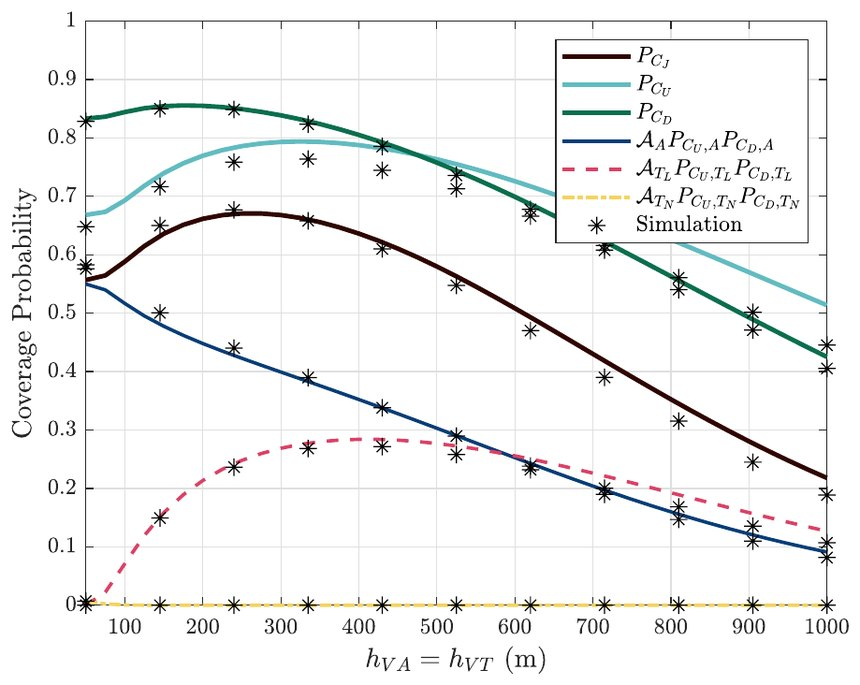

The talk
The Four Minute Thesis asks PhD students to explain their research to a non-specialist audience in four minutes. My talk covered my doctoral work on networks for air taxis and drones in cities: a heterogeneous network in which aerial platforms work alongside terrestrial base stations to serve aircraft along their routes.
The paper
The network in the talk is analyzed in Aerial-Terrestrial Heterogeneous Networks for Urban Air Mobility: A Performance Analysis, published in the IEEE Open Journal of Vehicular Technology (2025).
The paper looks at air taxis flying along fixed air corridors above a city, served by two kinds of base station: aerial platforms flying above the corridors, and terrestrial base stations with their antennas tilted upwards. It calculates how likely an aircraft is to connect to each kind, and how likely its link is to work in both directions, uplink and downlink, and checks the math against simulation.

Which kind of base station an aircraft connects to depends on its altitude and on how built-up the city is. Low down, buildings block most links to the ground, so aircraft connect mostly to aerial base stations. As they climb they can reach terrestrial base stations in line of sight, but higher still the distance to the ground grows and they shift back toward aerial ones. In high-rise cities they favor aerial base stations at every altitude.

The usual rule for choosing a base station, by the strongest average signal, does not always give the best coverage, because it ignores interference: the uplink and the downlink work best with different settings, and joint coverage is best at a compromise between them. Altitude matters as well. When the corridor sits as far below the aerial base stations as it sits above the terrestrial ones, joint coverage is highest at a separation of about 300 m.

For network designers, the results suggest placing aerial base stations close to the corridors, choosing the corridor altitude so that an aircraft sees at most one terrestrial base station in line of sight, which limits uplink interference, and setting the uplink and downlink thresholds with care.
Figures from the journal article, published open access under a CC BY 4.0 license.
The competition
Forty PhD candidates entered. In the first round, an expert panel judged pre-recorded presentations anonymously, and the top 15 went on to present live at IEEE ICC 2025 in Montreal. Judging covered comprehension, clarity of content, engagement, and presentation.
The winners were announced the next day at the meeting of the IEEE ComSoc Board of Governors, where they were recognized by the ComSoc president, Prof. Robert Schober. Two other students from my lab also placed: Salah Abdeljabar won second place, and Zhengying Lou also took third.